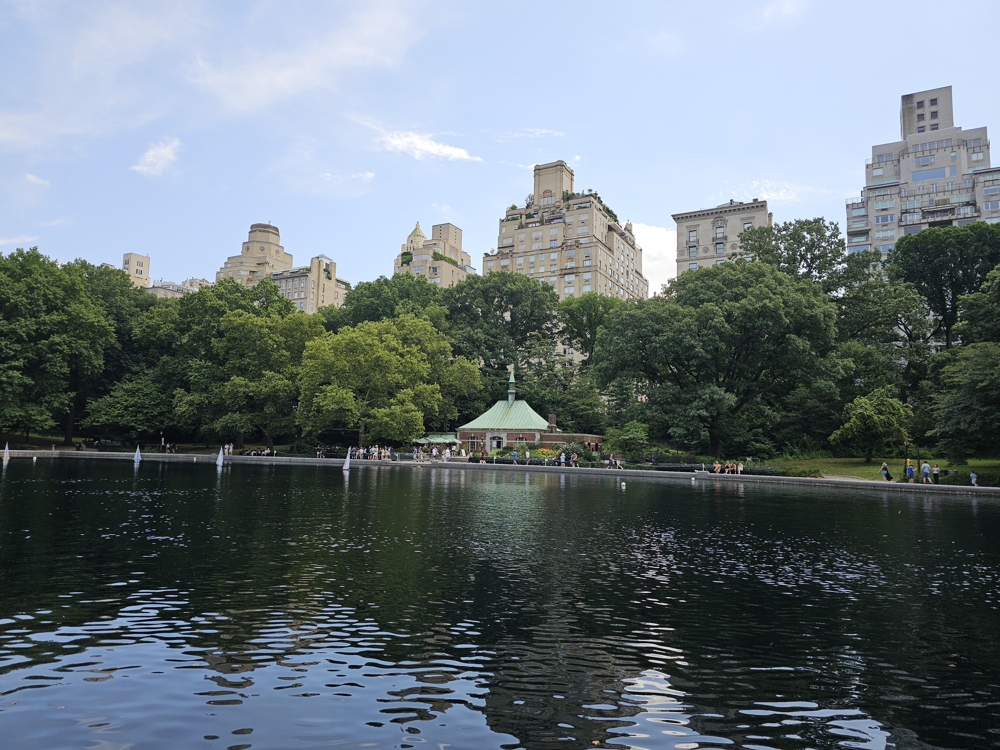
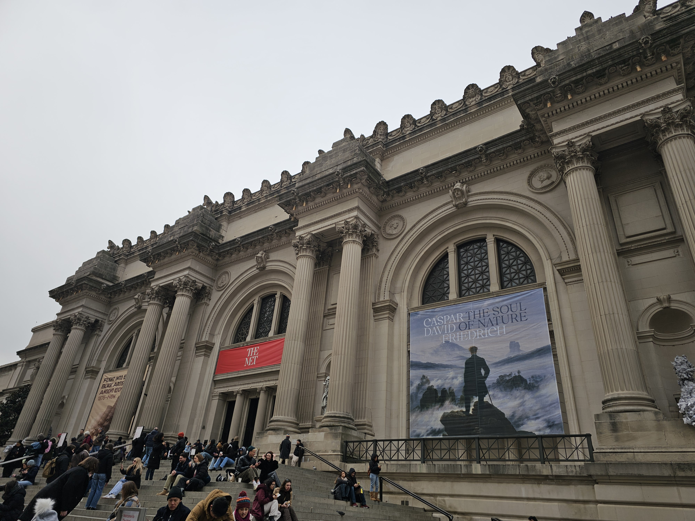

There are two different ways to get out of Grand Central, and two different locations to board any of the buses from.
Regardless of which way you chose, make sure to take the bus and get off at Madison Avenue and 72nd Street.
Click a choice to show how to get the bus from the LIRR platforms.
Please view both, as one may better suit your needs.
Here's the buses to look out for + Directions:

Regardless of which stop you board at, or which bus you take...
You MUST get off at East 72nd Street and Madison Avenue!!
After getting off, walk towards 72nd Street and then turn to walk towards 5th Avenue.
Then walk straight into Central Park via the Terrace Avenue walkway entrance. Continue to walk via Terrace Avenue, where you will reach the Bethseda Terrace!
Some Tips and Tricks
- At Grand Central, there is a set of elevatorsthat will take you up from the mezzanine to the concourse.
- It's located between the 46th Street and 47th Street escalator banks on the mezzanine, so look for signs.
- There is another elevator available on the Concourse level, that will take you to the Street level.
- This elevator is located in a small corner past a few ticket machines, facing away from the 47th Street escalator bank.
- Note: During all daytimes, the M2 Bus operates Express. The only stop you can take this bus from is at 50th Street and Madison Avenue.
- Note: Some M4 Buses operate Express during weekday rush hours. The only stop you can take this bus from is at 49th Street and Madison Avenue.

Expected Time Taken - Minutes
- To get onto street level from the LIRR tracks, it will take you roughly 5-7 minutes depending on your speed.
- To get the bus and ride from either 45-46 Streets or 49-50th Streets, to Madison and 72nd Street, should take 12-17 minutes
- This depends on which bus stop you board from, which bus comes your way, and traffic.
- To get from The 72nd Street Bus Stop to Bethseda Terrace via 72nd Street and Terrace Avenue, should take 11 minutes, depending on your speed.
Map Overview
Below is a map showing the route from Grand Central (when you get onto street level) to Times Square.
View A Google Maps Route from Grand Central (47th St and Madison Avenue) to Central Park - Bethseda Terrace
Central Park - Bethseda Terrace

BONUS: Around Central Park, there's a few notable places around the area you can check out!

The Conservatory Pond at Central Park

The Metropolitan Museum of Art

The Guggenheim Museum